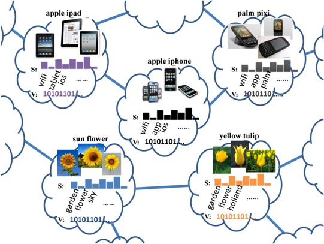
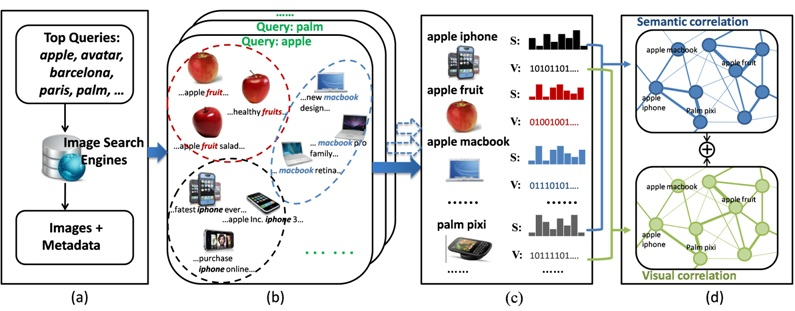
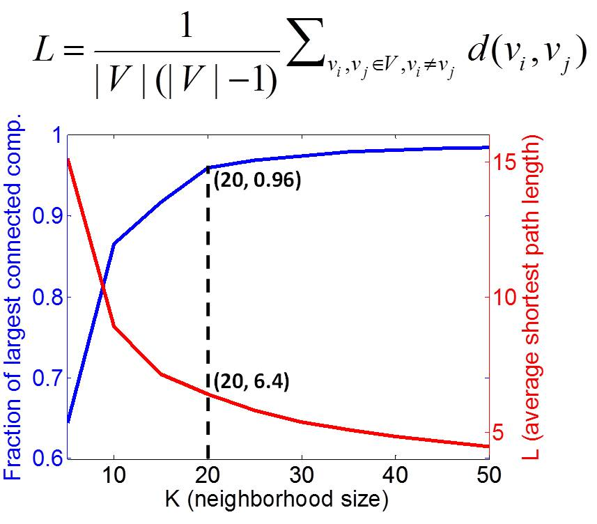
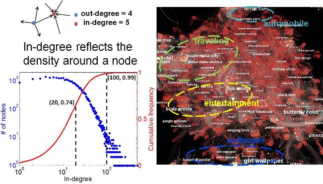
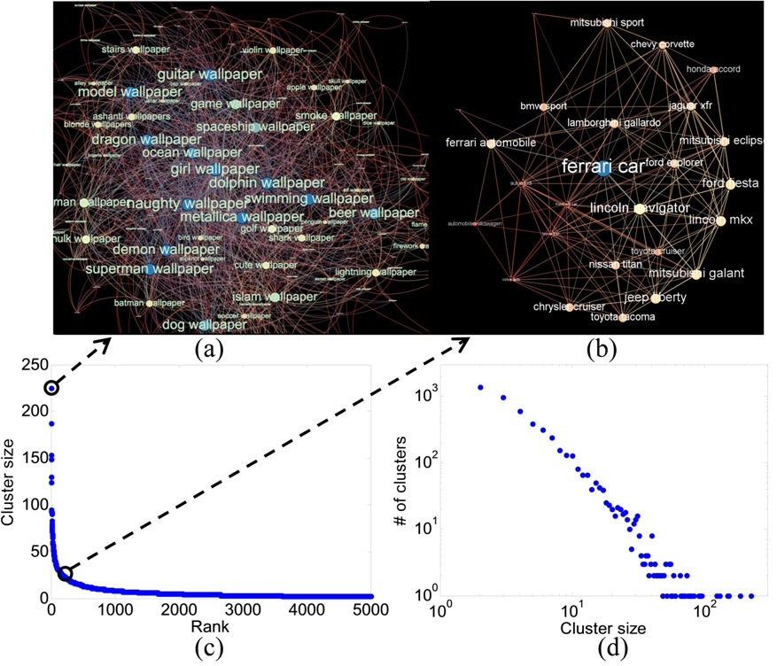
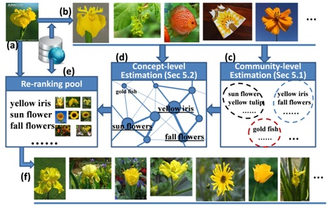
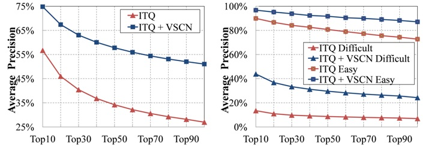
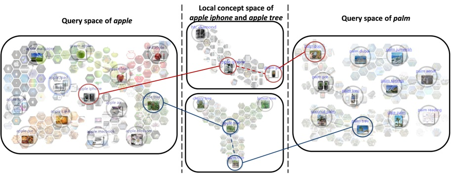

1Department of Informaiton Engineering, 2Department of Electronic Engineering, The Chinese University of Hong Kong
3Shenzhen Institutes of Advanced Technology, Chinese Academy of Sciences
1. Introduction
Modeling the relevance of web images is an essential task for many applications such as image retrieval, clustering, and browsing.
Textual (e.g. surrounding texts + keyword index) or visual (e.g. various visual descriptors + ANN algorithms) approaches are only
effective within a small local region in textual feature space (e.g. under the same keyword index) or visual feature space
(e.g. near-duplicate images), and are rather restrictive for most of the aforementioned tasks.
This work tries to provide a top-down solution by structuring the web images into a Visual Semantic Complex Network (VSCN)
(illustrated in Figure 1). Our key observations are: 1) images on the web tend to form visually and semantically compact
clusters which reflect the common interest of human, and 2) the said image clusters are correlated with each other to different degrees.
In our VSCN, these compact clusters are used as the elementary units for structuring the web images. Concretely, we represent
the image clusters as nodes (which we name as semantic concepts) and their correlations are accounted for by the edges of the
network. Currently, our VSCN consists of 33,240 semantic concepts and indexes around 10 million web images.

Figure 1: Illustration of the VSCN. T and V are textual and visual descriptors for a semantic concept.
We first present our automatic approach of structuring the web images, followed by a study on the structural properties of
the constructed network that reveal some meaningful observations. To further demonstrate the use of this network, we apply
it to two practical applications and show encouraging results.
2. Approach Overview
The main pipeline of our approach is illustrated in Figure 2. As a preliminary study, we start with 2,000 top textual queries
from Bing image search engine. We automatically discover 33,240 semantic concepts by jointly using the image contents and their
surrounding texts which we collected the search engine and the web (Figure 2(b)). Each semantic concept has a textual name and
the top 300 images gathered from the image search engine are taken as its exemplar set. Textual and visual descriptors are then
built for the semantic concepts (Figure 2(c)), based on which, the semantic and visual correlations are further computed. At last,
we fuse the two types of correlations and construct a K-NN network.

Figure 2: Flowchart of VSCN construction
3. VSCN Structures
We explore several structural properties of the constructed VSCN so that we can have a better macroscopic understanding of
this huge network.
We first look into the connectivity of the VSCN. Figure 3 shows that when K (neighborhood size) goes to 20, a great connected
component emerges that contains 96% of the VSCN. In the meantime, the average shortest path length drops below 6.4. This means
most nodes on the network are reachable within a few hops, and it’s possible to efficiently explore the VSCN by following its
edges (e.g. Figure 4). Note that the curves become flat after K reaches 20. We thus fix K to 20 in the following.

Figure 3: Size and the average shortest path length of the largest connected component on the VSCN.
Figure 4: The path that connects the concept of “apple laptop” to “disney logo”. Such paths are potentially helpful for
informational search.
Next, we study the in-degree distribution of the VSCN. The nodes have identical out-degrees (K=20), but their in-degrees
differ widely from 0 to 500. In general, representative and popular concepts (e.g. ferrari car, psp game) are of high in-degrees,
and form hub structures. Uncommon concepts (e.g. geodesic dome) form isolated concepts with zero in-degree. Figure 5 shows part
of the VSCN overlaid with names of 100 concepts with large in-degrees. Several semantic regions can be observed.

Figure 5: In-degree distribution and cumulative frequency.
Another property of our interest is the community structure on the network. We run a hierarchical clustering algorithm and
cluster the nodes on the VSCN into 5,000 groups. As shown in Figure 6, most concepts belong to a community with size > 1.
These tightly connected clusters aggregate together the potentially relevant images, and are beneficial for image retrieval tasks.

Figure 6: (a) and (b) Two communities, wallpaper and sports cars, on the VSCN. (c) Rank of cluster size. (d) Distribution
of cluster size.
The following video gives a quick demonstration of the VSCN structures.
Demonstration of structures of the Visual Semantic Complex Network (VSCN)
4. Applications
We first apply the VSCN to the task of content-based image retrieval. The following flowchart, as well as the demo, gives
a high-level idea of how we can exploit the structure information of VSCN to improve the current image retrieval methods.

Figure 7: Flowchart of our VSCN-based image retrieval.
Illustration of our content-based image retrieval method & Sample results
Quantitative experiments validate the advantages of using the VSCN.

Figure 8: Retrieval performance of our approach (ITQ hasing + VSCN) and the baseline method (ITQ hasing).
(a) Average precision on the 10K query dataset. (b) Average precision on the difficult and easy datasets.
The VSCN also inspires a novel and effective image browsing scheme. The scheme bridge different local image spaces by
allowing users to browse along edges of the VSCN (illustrated in Figure 9). A video demo is also provided. We demonstrate
the effectiveness of our browsing scheme by conducting a user study in the task of interactive navigational image search.

Figure 9: Browsing across query spaces and local concept spaces. Two browsing paths connecting the query spaces of apple and
palm are highlighted. When users click apple iphone in the query space of apple, the local concept space is shown, with two
more neighboring concepts, namely htc diamond and palm pixi. Exemplar images and visual transitions (indicated by red dashed
lines) are also displayed. Users can further enter the query space of palm by clicking on the concept of palm pixi. The case
is similar if users click apple tree.
Demonstration of our image browsing scheme with VSCN